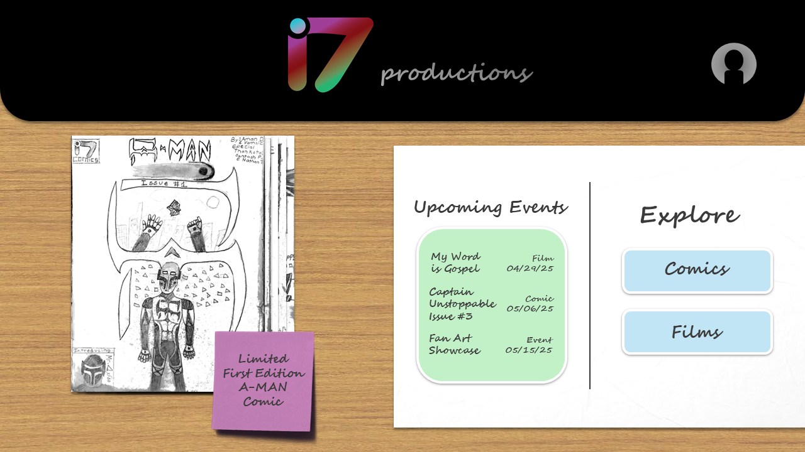
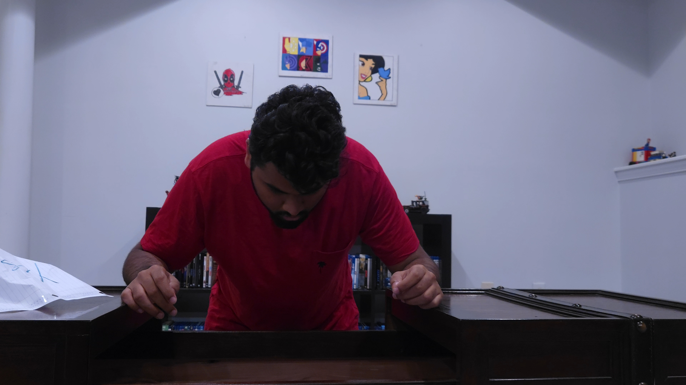
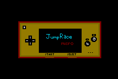
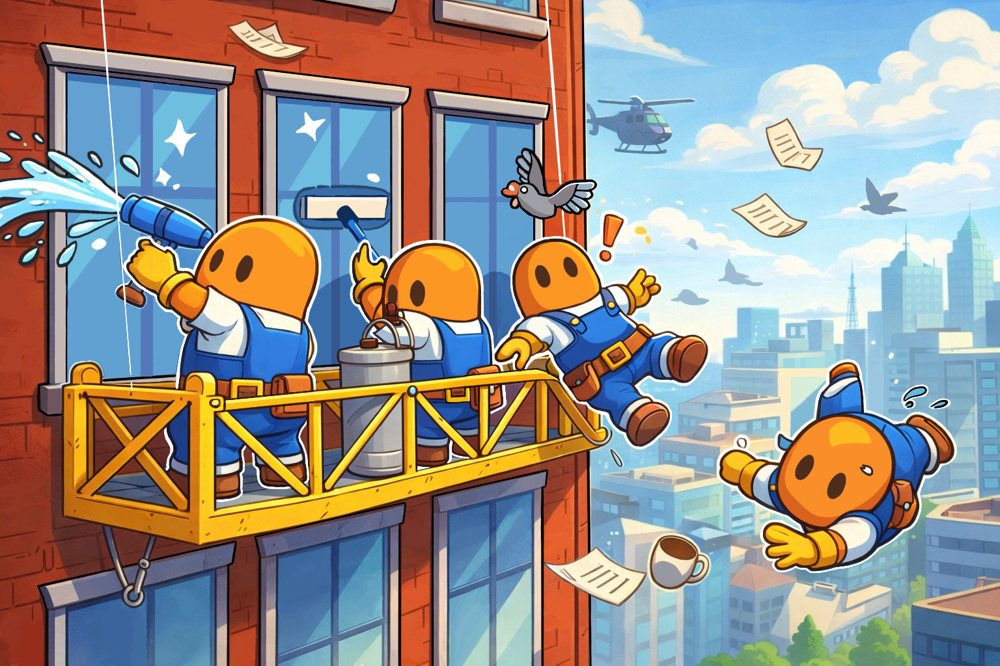
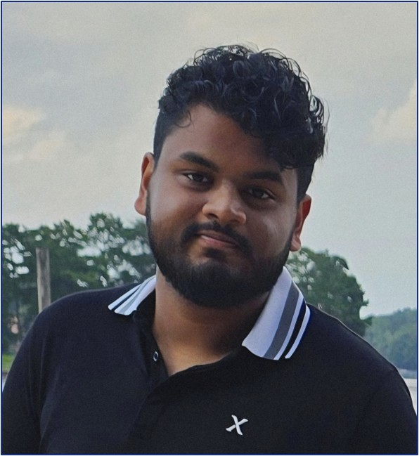

Visual Design
Poster compositions and digital visual design work focused on clarity and audience engagement.

UI / UX Design
Designed interfaces for a movie store website and a travel planning application.

Video Production
Wrote, directed, and edited short films while exploring cinematography and collaborative filmmaking.

JumpRace Micro
A GameBoy Advance arcade-style minigame collection inspired by WarioWare.

Window Pains
A multiplayer co-op party game focused on playful visuals, sound design, and energetic gameplay.
Aman Das

About Me
Hi! I'm Aman, a third-year Literature, Media, and Communication major at Georgia Tech.
I'm passionate about storytelling and interaction design, and I enjoy turning complex ideas into clear, engaging visuals through UI design, infographics, and multimedia storytelling. I focus on creating thoughtful, user-centered work that is both visually compelling and easy to understand. I'm excited by opportunities to design meaningful experiences for real audiences with clarity and impact.
Outside of my professional and academic life, I like to watch and review movies, play games, write scripts, listen to music, and explore new places with my friends.